Estrutura organiza.
Diagonais firmes e planejamento criterioso sustentam cada decisão.
AVRA Incorporadora · Guia de Identidade Visual · v10
A identidade

01 / Origem e significado
Defesa do nome
/ ˈav.ra / · grego moderno · brisa
No grego moderno, αύρα é pronunciado aproximadamente “ávra” e significa brisa: vento suave e fresco.
O nome curto e sonoro oferece uma assinatura compacta. Respiro, tranquilidade e conexão com o lugar são interpretações estratégicas da marca, além do significado literal.
Nome e experiência
A brisa é percebida pelo que move.
A marca traduz essa sensação em leveza, fluidez e cuidado com os espaços de viver.

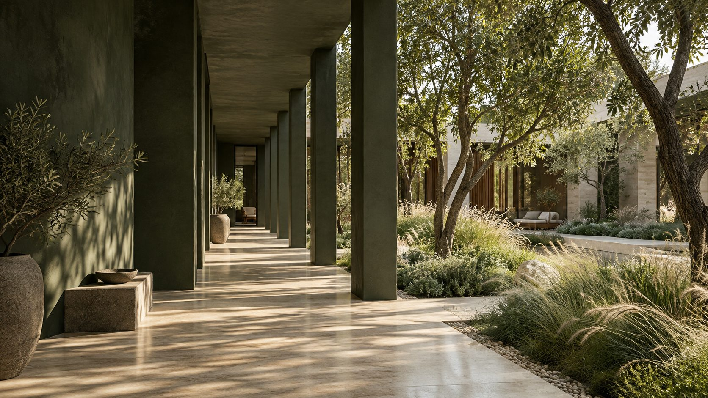
02 / Conceito da marca
Defesa do conceito
A ideia une o planejamento de uma incorporadora à experiência de quem vai viver em seus empreendimentos.
Diagonais firmes e planejamento criterioso sustentam cada decisão.
Verde, luz natural e materiais reais dão qualidade à experiência de viver.
Curvas que conectam, respiro nos espaços e fluidez na comunicação.
Posicionamento
AVRA é a marca institucional. Os empreendimentos terão identidade própria e uma relação de assinatura a definir. As simulações deste guia não representam obras realizadas.
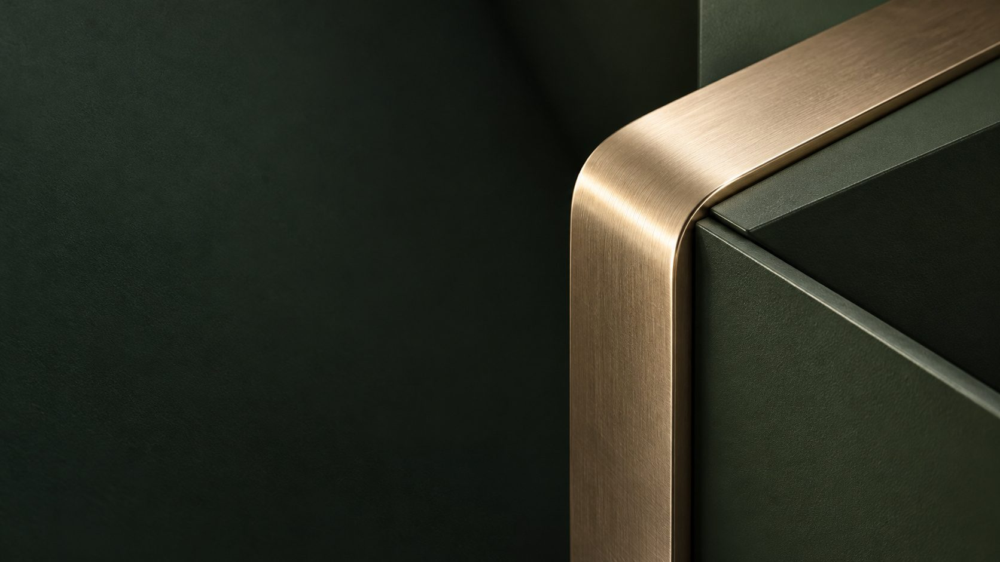
03 / Assinatura revisada
Construção da assinatura
Linha de base, altura e eixo comum organizam as quatro letras.
As diagonais dão firmeza e direção.
Os arcos suavizam as transições e associam o lettering ao movimento da brisa.
A revisão abre a ligação entre o primeiro A e o V. O V ganha uma diagonal própria, sem abandonar o ritmo arquitetônico.
Quatro letras. Uma leitura clara.
Assinatura · contrastes
Marfim sobre verde profundo
Reservar uma área livre ao redor da assinatura. Referência de trabalho: altura do descritivo “INCORPORADORA”. Não aproximar o pattern, bordas ou textos desse limite.
Usar a assinatura completa quando “INCORPORADORA” permanecer legível. Não há símbolo isolado ou assinatura vertical definidos nesta revisão.
Descritivo legível
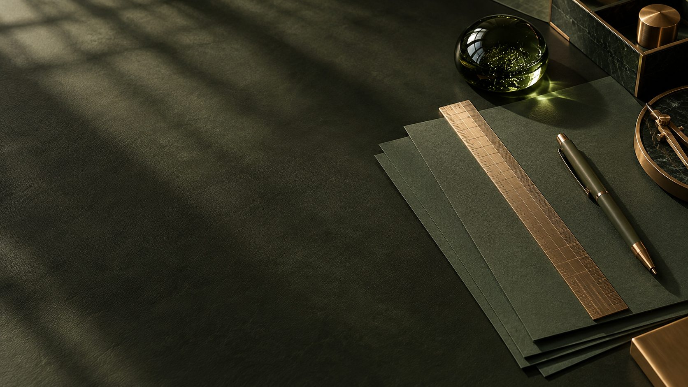
04 / Tipografia
Títulos
Regular 400 nos títulos: proporções abertas, desenho sóbrio e presença que acompanha a arquitetura da marca.
ÁÀÂÃÉÊÍÓÔÕÚÜÇ áàâãéêíóôõúüç
Textos
Regular 400 nos textos; Semibold 600 em destaques e informações de apoio. A hierarquia vem de escala, peso e respiro.
Experimente — clique e escreva
Planejamento que acolhe.
Manrope organiza informações comerciais e técnicas com clareza. Frases objetivas, alinhamento à esquerda e entrelinhas confortáveis.
0123456789 · R$ 1.250,00 · 450 m²
Evitar negrito ou itálico sintético na Tenor Sans. Fontes com licença OFL. Alternativa operacional: Arial. A assinatura AVRA nunca deve ser substituída por uma fonte.
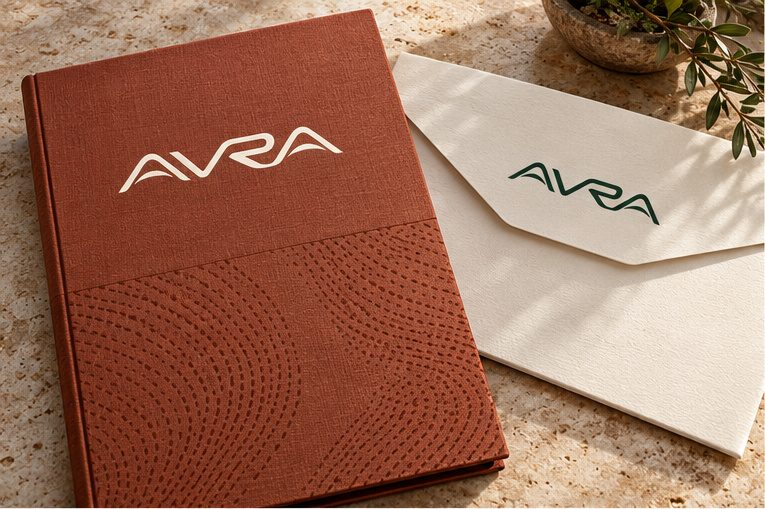
05 / Paleta ampliada
Defesa cromática
Passe o mouse para abrir cada tom · clique para copiar o HEX.
Cor e legibilidade
Branco puro não integra a paleta. Não é necessário usar as seis cores em cada peça. Valores CMYK matemáticos — converter pelo perfil ICC e conferir prova no substrato.
06 / Pattern BR20
Defesa do pattern
Pequenos traços formam correntes curvas e densas. Os canais de respiro entre elas tornam perceptível o fluxo do ar.
O desenho preserva a direção dos traços, a concentração das faixas e os vazios sinuosos. Um campo uniforme e disperso de pontos não representa o BR20.
Temperatura
SVG ou PDF com traços vetoriais. Recortar o campo sem deformar a matriz.
A espessura e o intervalo dos traços. Não reconstruir como grade genérica de pontos.
O pattern acompanha. A informação conduz. Não atravessar a logo com traços.
07 / Aplicações · estúdio 3D
Arraste para girar a peça · clique para interagir · troque de objeto nas abas.

07 / Aplicações físicas e digitais
Aplicações físicas
01 / 12


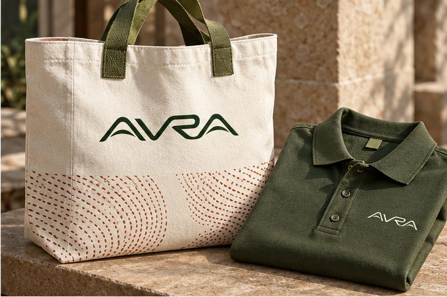
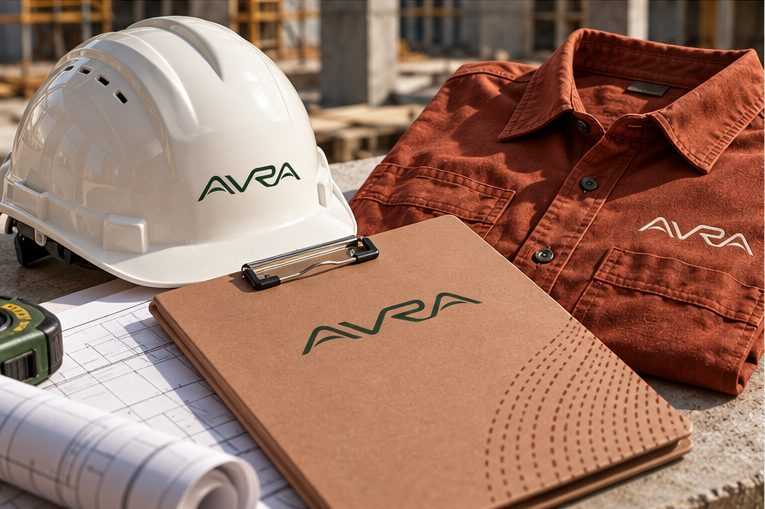


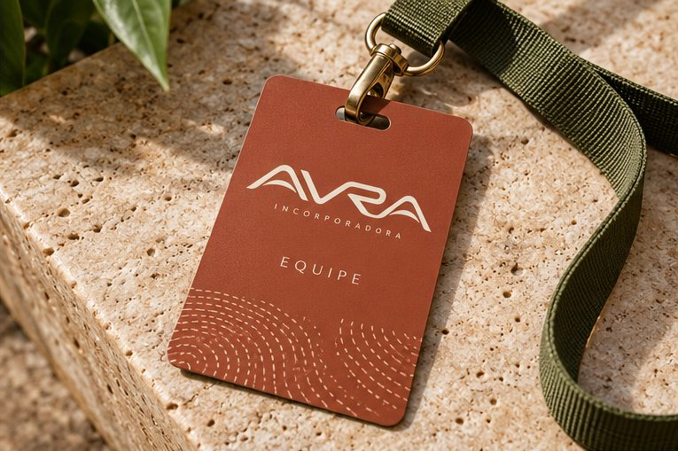
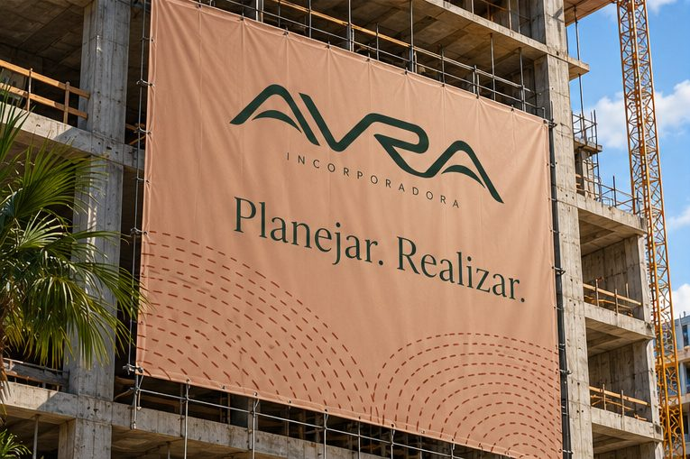
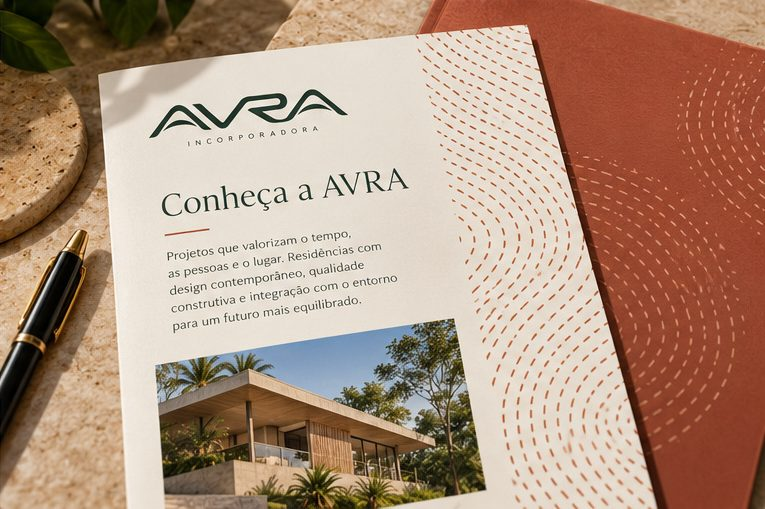
Simulações visuais de materiais, interfaces e usos.
Arte-base · conteúdo e contraste
Estudo da arte de sinalização. Ajustar dimensões e conteúdo ao local. Passe o cursor sobre a placa para ver a luz do dia mudar.
Aplicações digitais
Instagram apresenta a marca e informa. O carrossel organiza conteúdo. Stories comunicam novidades com leitura imediata. WhatsApp apoia o atendimento. LinkedIn apresenta a visão institucional. Perfis, indicadores e mensagens são exemplos ilustrativos.
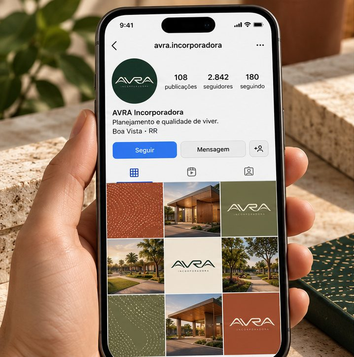
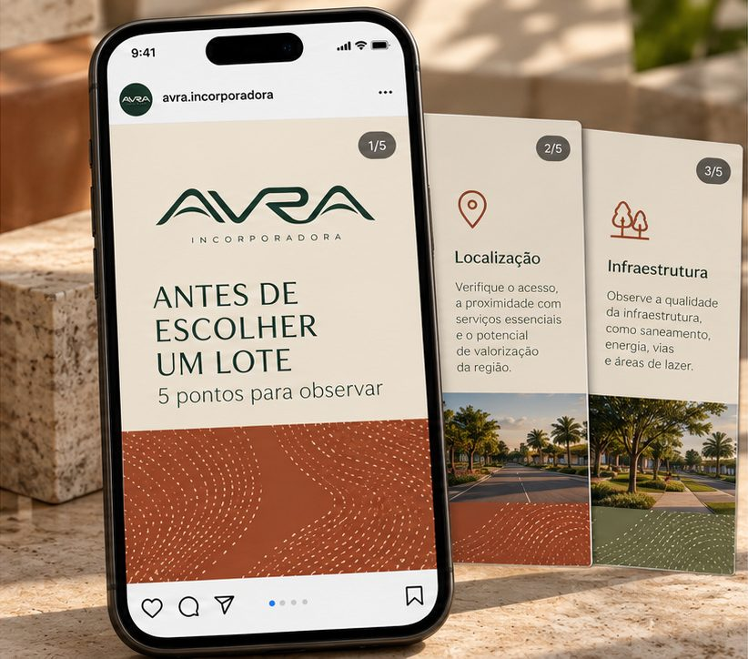
Arraste para girar · clique para ampliar
Carrossel: capa objetiva, sequência de pontos e fechamento claro. Story: um título, uma informação principal e um caminho de contato.
Manter margens generosas. Usar Manrope nos textos e Tenor Sans nas chamadas. O BR20 ocupa áreas de apoio e não disputa com o conteúdo.
08 / Diretrizes de aplicação
O que preservar
Preservar a abertura entre A e V, os arcos e as proporções do lettering. Passe o mouse em cada cartão para ver o erro acontecer — e por que evitá-lo.
Não achatarProporções preservadas.
Não inclinarLinha de base horizontal.
Não substituir por uma fonteA assinatura é desenho, não texto.
Não sobrepor grafismosRespiro em todos os lados.
Não transformar em ondasA expressão vem dos traços separados.
Não invadir a assinaturaO campo gráfico respeita a área livre.
Direção fotográfica
Luz natural, vegetação, sombras e texturas reais. Arquitetura e pessoas em enquadramentos que transmitam cuidado e qualidade de experiência.
Usar fotografias de obras e empreendimentos reais quando disponíveis. Simulações e renders devem ser identificados como tais.
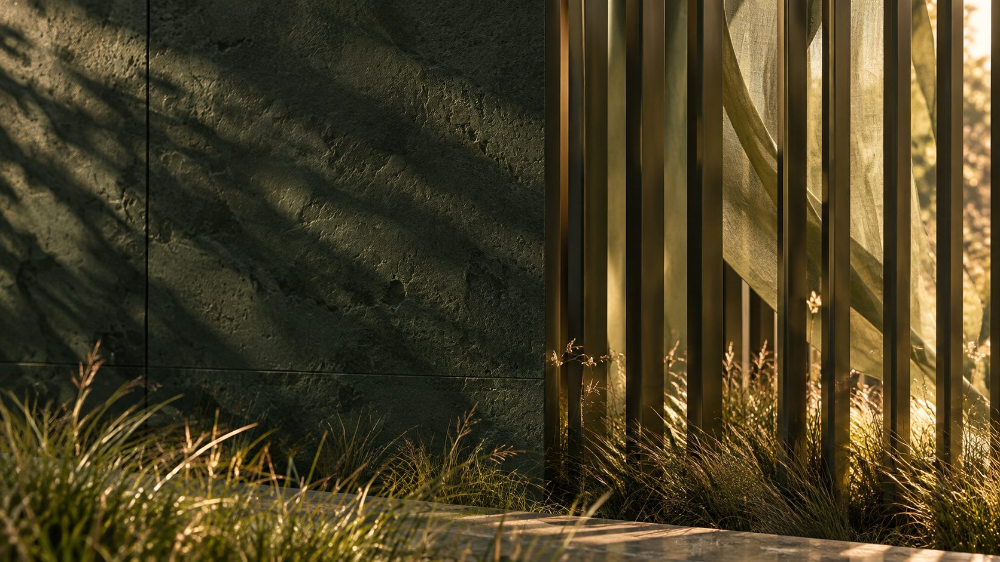
Arquivos e produção
Referência revisada com abertura A/V. O desenho mestre em curvas e os mínimos precisam de conferência antes da produção.
Matriz vetorial reconstruída a partir da referência visual fornecida.
Impressão, bordado, corte, pintura e acabamentos exigem prova no material escolhido. Evitar reduções em que os traços se fundam ou o descritivo perca leitura.
Converter as cores pelo perfil ICC do processo e validar prova no substrato. Pantone: definir quando houver necessidade de tinta especial. O dourado digital é cor plana — metalizado, hot stamping e pintura são acabamentos a especificar separadamente.
Tenor Sans e Manrope sob licença OFL. Origem de αύρα verificada no Portal da Língua Grega. Mockups são simulações visuais. As referências de logo em SVG são reconstruções da imagem revisada e não substituem a homologação do mestre em curvas.
Desenvolvido por

Nome, conceito, assinatura, sistema visual, pattern BR20, guia de identidade e esta experiência digital foram desenvolvidos pela BRITTO* GROUP para a AVRA Incorporadora.